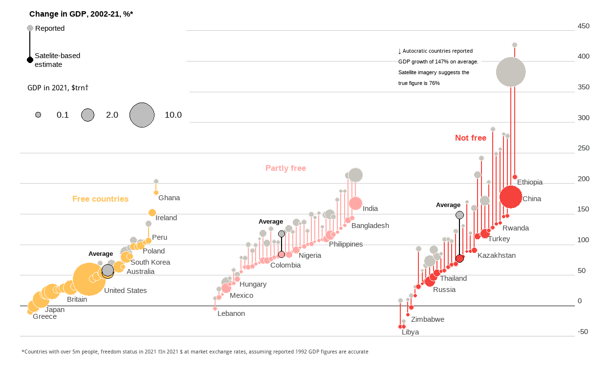
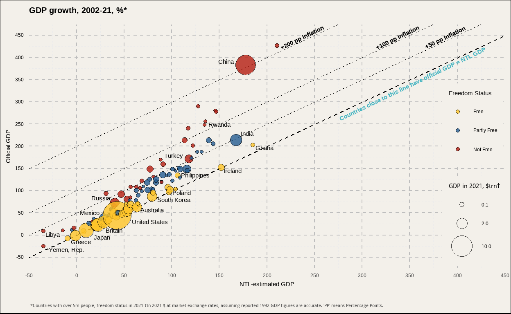

Satellite images of the brightness of the earth, also called nighttime lights data (NTL, from the US Air Force’s Defense Meteorological Satellite Program), have been used as a proxy for economic activity. Luis R. Martínez, professor at the Harris School of Public Policy at the University of Chicago, not only developed a model to calculate the GDP of every country based in the NTL data set, but he also found that countries with less political rights and civil liberties report overestimated GDP. The goal of this post is to rebuild a chart designed by The Economist to show the magnitude of this finding. Find The Economist article here.
The data includes different records per country: the GDP from World Bank, the GDP estimated based on NTL, and the yearly growth of each one between 2002 and 2021. In addition, it includes the status in the Freedom in the World Index 2021, published by Freedom House, which classifies each country in three categories (Free, Partly Free, and Not Free). Moreover, the population is incorporated, because for visualization purposes the chart only shows countries with more than 5 million population. Finally, the projections of the NTL model are included to contrast the official GDP statistics.
Let’s see how the data looks like:
| Country.Name | Year | GDP. growth.LCU.R | GDP.in. 2015.USD.R | GDP.growth. LCU.adjExag.NTL | |
|---|---|---|---|---|---|
| 1 | Libya | 2021 | 31 | 60910775962 | 20 |
| 2 | Yemen, Rep. | 2021 | -2 | 33429671860 | -2 |
| 3 | Zimbabwe | 2021 | 6 | 20562359266 | 4 |
| 4 | Greece | 2021 | 8 | 200827546085 | 8 |
| 5 | Lebanon | 2021 | -11 | 30979755568 | -11 |
| GDP.in. 2015.USD.NTL | GDP.var.R | GDP.var.NTL | FIW.Status | Popu.2021 | |
| 36634943488 | 8.73 | -34.61 | NF | 6958538 | |
| 29289246720 | -25.33 | -34.58 | NF | 30490639 | |
| 15954965504 | 10.36 | -14.36 | NF | 15092171 | |
| 197563367424 | -7.88 | -9.38 | F | 10664568 | |
| 26433470464 | 11.82 | -4.59 | PF | 6769151 |

chart <- ggplot(DF, aes(x = order, y = GDP.var.NTL, xend = order,
yend = GDP.var.R, color = FIW.Status)) +
facet_wrap(~ factor(FIW.Status, levels = c("F", "PF", "NF"))) +
geom_hline(yintercept = 0, linewidth = 0.25) +
geom_segment() +
geom_point(aes(xend = order, y = GDP.var.R, size = GDP.in.2015.USD.R/1e+12),
shape = 21, fill = "#C7C5BD", color = "white") +
geom_point(aes(size = GDP.in.2015.USD.NTL / 1e+12, fill = FIW.Status),
shape = 21, color = "white") +
scale_color_manual(values = c("#FFC259", "#F6423C", "#FFA9A6")) +
scale_fill_manual(values = c("#FFC259", "#F6423C", "#FFA9A6")) +
scale_size(range = c(1, 12), breaks = c(0.1, 2, 10), "GDP in 2021, $trn†") +
scale_y_continuous(
position = "right",
limits = c(-50, 450),
n.breaks = 10,
expand = expansion(0)
) +
lims(x = c(0.5, 46)) +
theme_economist_white() +
theme(
plot.background = element_rect(fill = "white"),
panel.spacing.x = unit(0, "cm"),
strip.background = element_rect(fill = "white"),
strip.text = element_text(color = "white"),
panel.grid = element_line(color = "ligthgray", linewidth = 0.10),
axis.line.x.bottom = element_line(color = "gray", linewidth = 0.10),
) +
theme(
axis.title.x = element_blank(),
axis.title.y = element_blank(),
axis.text.y = element_text(vjust = -0.5, color = "#2C2E2E"),
axis.text.x = element_blank(),
axis.ticks.x = element_blank(),
legend.background = element_rect(fill = "white"),
legend.position = c(0,0.85),
legend.direction = "horizontal",
legend.justification = c(0, 1),
legend.key = element_rect(fill = "transparent"),
plot.caption = element_text(hjust = 0, vjust = -1,
color = "#454545", size = 8)
) +
guides(color = FALSE, fill = FALSE,
size = guide_legend(title.position = "top")) +
geom_text(data = DF%>% filter(label == 1 &
!(Country.Name %in% c("Japan", "Britain","United States", "China",
"Australia", "Ireland", "India", "Russia", "Mexico", "Peru"))),
aes(label = Country.Name), color = "#454545",
vjust = 1.5, hjust = -0.1, check_overlap = T) +
geom_text(data= countriestxt, aes(label = labels), color="#454545", hjust=0)+
geom_text(data = titles, aes(label = labels), fontface = "bold", size=4.5) +
geom_segment(data = average, aes(x=order, xend=order, y=GDP.var.NTL,
yend=GDP.var.R), color="black") +
geom_point(data = average,aes(x=order, y=GDP.var.NTL,
size=GDP.in.2015.USD.NTL, fill=FIW.Status),
shape=21, color="black") +
geom_point(data = average, aes(x=order, y=GDP.var.R, size=GDP.in.2015.USD.R),
shape=21, color="black", fill="gray") +
geom_text(data= avTitles, aes(label= labels), fontface = "bold",
size= 3.5, color = "black") +
geom_label(data = sumQuote, aes(label = text), color = "black",
size = 3, hjust = 0, vjust = 1, lineheight = .8, fill = "white",
label.size = NA, label.padding = unit(0, "cm")) +
labs(caption = captiontx) +
inset_element(pinset, left=0, bottom=0.83, right=0.3, top=1, align_to="full")Analyzing the original chart, we can see that it has some advantages. For instance, it allows us to identify each of the 103 countries, or it separates clearly the Freedom categories. Nevertheless, we realize that the X-axis is used to create an order among dumbbells, but it doesn’t add more information. Therefore, we propose an alternative visualization that uses this axis to compare GDP values. In our chart, the Y-axis shows the officially reported GDP growth, while the X-axis illustrates the NTL-based estimate of GDP. As a result, we should expect that each country will be located in the intersection line where Y is equal to X. However, the autocratic countries are far away from this line, as their value of the officially reported GDP.

image of collection of graphs